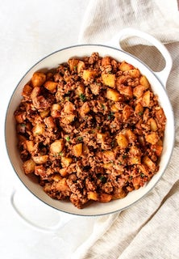

Ground Turkey Skillet

Description
This Ground Turkey & Potato Skillet was loosely inspired by a classic picadillo. It has very different flavors – a picadillo includes olives and raisins. That’s not going to fly with my children. Or my husband, if I’m being honest. But I wanted to take that general idea and make it family friendly with very simple ingredients. We all need hobbies and that’s mine.
This meal is an accurate reflection of my favorite kind of meal to make at home. It may not be the prettiest, but it’s tasty. The addition of potatoes keeps it hearty. And it’s just so easy! This is exactly the sort of comfort food I need in my life right now. How about you?
Ingredients
- Ground Turkey
- 1lb ground lean turkey I use 93/7 lean turkey but you can use whatevery you want
- 1 tsp salt
- 1/2 tsp black pepper
- 1/2 tsp garlic powder
- 1/2 tsp chili powder
- 1/2 tsp dried oregano
- Potatoes
- 2 tbsp olive oil
- 4 cups diced potatoes I use yellow potatoes but sweet or red would all work!
- 8 oz canned tomato sauce
- 1/2 cup water
-
- 2 tsp garlic, minced
- 1 tsp dried oregano
- 1 tsp dried basil
- 1/2 tsp dried parsley
- 1/2 tsp salt
- 1/2 tsp black pepper
- 1/2 tsp onion powder
Steps
- Add your ground turkey (or beef) to a skillet on the stovetop. Use your spatula to crumble the meat. Cook on medium high, stirring occasionally, until browned. Stir in salt, pepper, garlic powder, chili powder, and oregano. Remove from pan and set aside.
- Add the oil to the skillet. Once the oil is hot, add the diced potatoes. Sauté on medium high heat, stirring occasionally until sides of potatoes have browned. This can take 5 to 10 minutes depending on your stove and the size of your potatoes.
- Reduce heat to medium. Add your cooked ground turkey, tomato sauce, water, minced garlic, oregano, basil, parsley, salt, pepper, and onion powder to the skillet with potatoes. Cover and simmer for 5 minutes, or until potatoes are tender.
- Taste and add more salt or pepper if desired.
- Serve over roasted vegetables (I recommend my Spicy Roasted Broccoli or Easy Roasted Broccoli), traditional rice, or cauliflower rice.